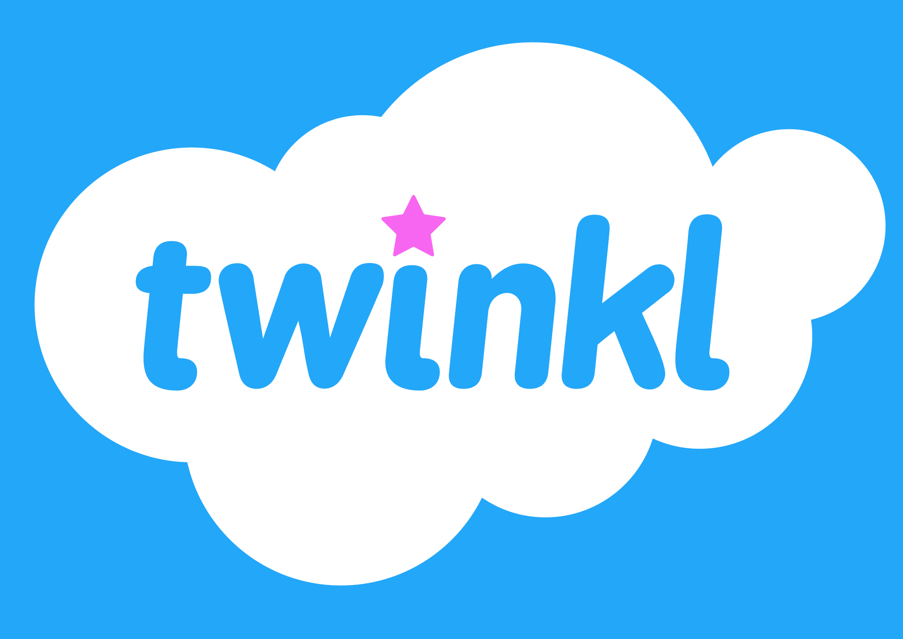
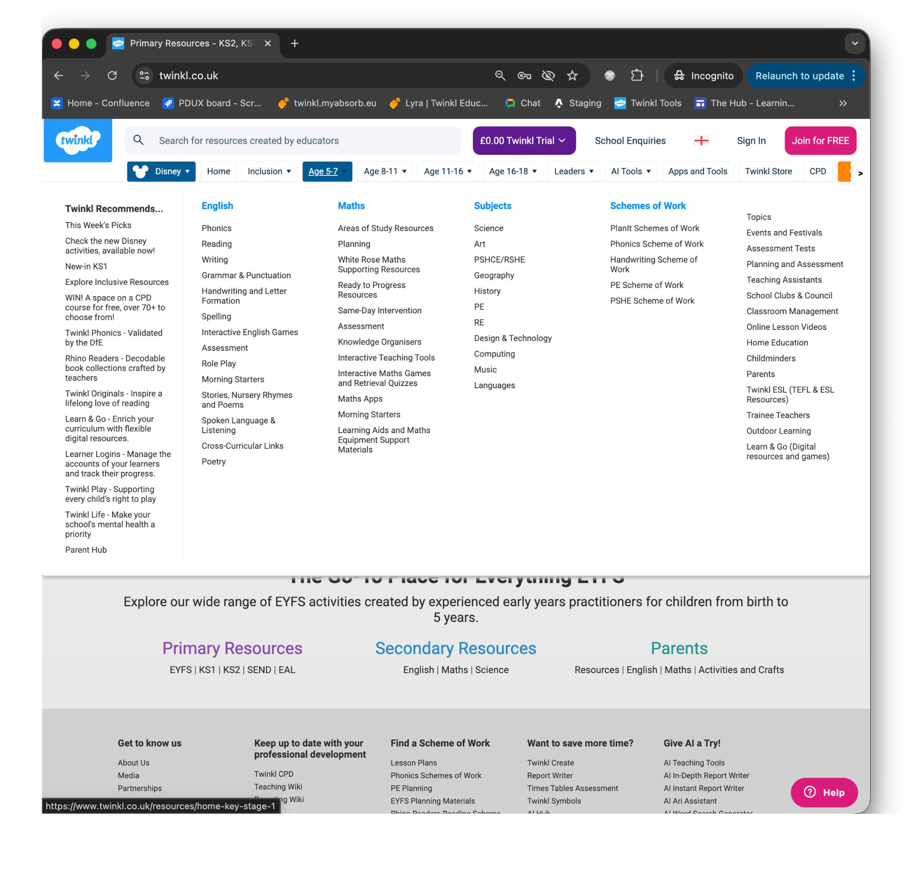
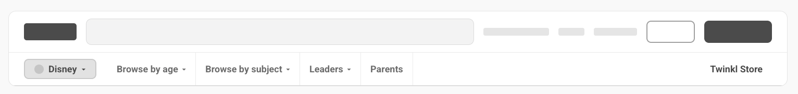
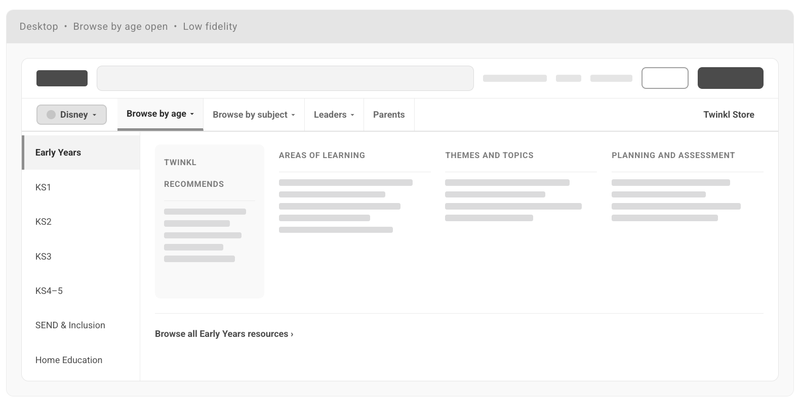
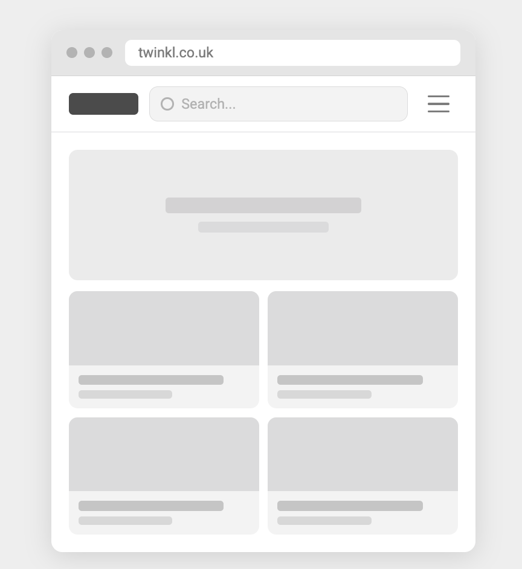
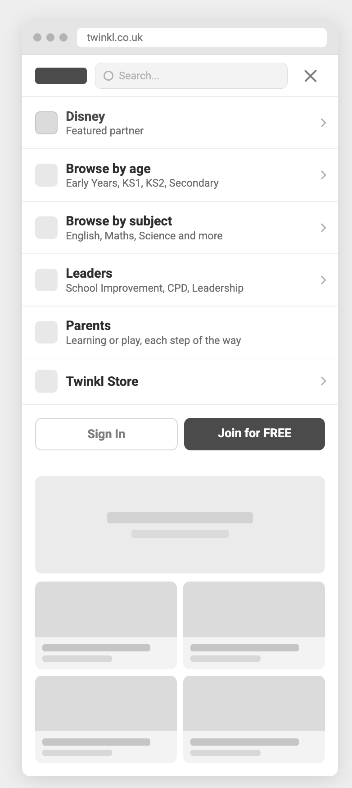

Senior / Lead Product Designer · Interview task
A redesign of the twinkl.co.uk top navigation.
The brief, in one line
Twinkl currently offers 1.5M+ resources across K–12, every subject, every region, and every age group. The current top nav is asked to be a search starting point, a category browser, a region switcher, and a subscription upsell — all at once.
Audit · existing top nav

1 2 3 4 5 6User research · 3 participants · 1 directed task
Task: “Find Year 1 phonics reading comprehension resources, starting from the homepage.”
User research · interview clip
Insights
Most session starts begin with "I'm teaching Year 1 phonics today" — a year-group context the user already holds. Subject and resource type narrow from there.
Power users type the exact resource title (Twinkl's SEO-strong page names exist because of search-led entry). Nav is a fallback when search fails or for new users browsing.
"Twinkl Recommends" exists because Twinkl ships big products (Originals, Phonics, Rhino Readers) that don't fit a single subject column. The nav needs a place for products, not just topics.
England's KS1/KS2 ≠ Scotland's Early Level / First / Second. A nav that surfaces age stages by name only works after the locale is set.
Three solutions we shipped
We split the top chrome into two stacked rows: brand · search · account on top, and browse + audience below. Each row owns a single job, so search isn't fighting three CTAs for the click.
Instead of mixing age stages, product silos, and brand chips on the same row, we promoted two clear browse modes. Leaders, Parents, and the Twinkl Store each get a dedicated spot.
The old “Twinkl Recommends” column buried 13 different links in plain text. We promote editorially-ranked product cards with thumbnails inside the mega-nav, and route the long list to a “See all” deep index.
User flow · every page in the redesign
Solution · 01 · Desktop · resting state · low fidelity

Solution · 02 · Desktop · "Browse by age" open · low fidelity

Solution · 03 · Mobile · low fidelity


How we'd know it worked
From a cold landing to opening any resource detail page. Target: −15% at the 75th percentile within 6 weeks.
Share of sessions that only use search vs. those that touch the nav. Healthy nav = ratio shifts toward nav-assisted browsing.
Hovers that close without a click. Today this isn't measured; we'd add it as the primary nav-health metric.
Tracks whether the "earned" slot is doing its job — and feeds editorial back.
Validation: a 4-week A/B with a 10% holdout, gated by an unmoderated tree test before launch to catch new-taxonomy confusion early.
Deliverable · narrated walkthrough
▶ Drop the recorded narration into slides/assets/narrated-walkthrough.mp4 to replace this placeholder.
Happy to dig into any slide.